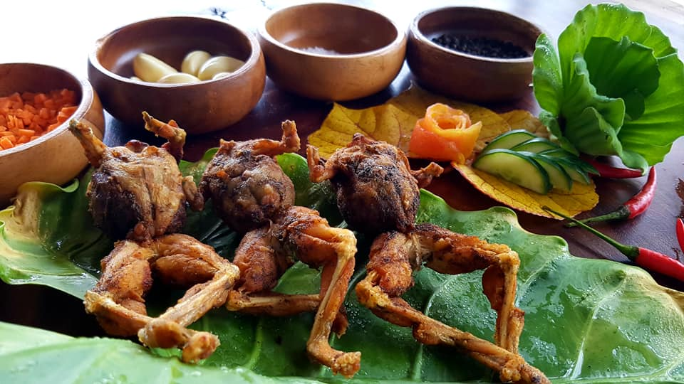
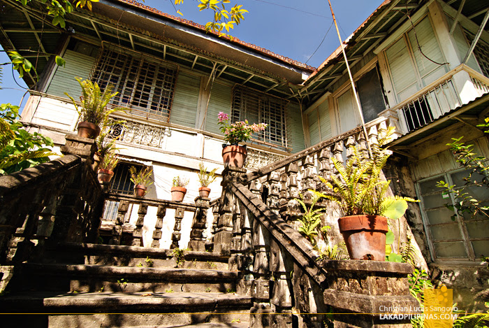
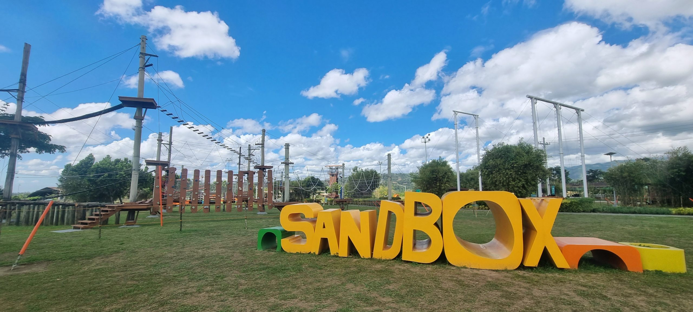

Mi-Abe Kapampangan Cuisine
Mi-Abe Kapampangan Cuisine in Pampanga is a homey restaurant serving authentic Kapampangan dishes that highlight the rich culinary heritage of the region.
Kusina Ni Aduy
Kusina Ni Aduy in Pampanga is a casual eatery serving affordable Kapampangan comfort food and grilled favorites in a simple, homey setting.

Kusinang Matua
Kusinang Matua in Pampanga is a heritage-inspired restaurant serving traditional Kapampangan dishes that highlight the province’s rich culinary history.

San Fernando's Tibok-tibok
A traditional Kapampangan dessert made from carabao's milk, known for its smooth texture and rich flavor, representing the region's strong dairy-based culinary heritage.
San Luis Rice (Palay)
The dominant agricultural crop of San Luis, grown in irrigated fields across the municipality and supplied to markets in Pampanga and nearby provinces.
Santa Monica Parish Church
A historic church recognized for its unique architecture and role in Minalin’s religious traditions.
Sunset Park
A relaxing public destination where visitors enjoy open spaces, sunsets, and recreational activities with families and friends.

Sandbox at Alviera
An adventure park offering zip lines, ATV rides, obstacle courses, and outdoor recreational activities for tourists.
Miyamit Falls
A scenic waterfall destination surrounded by forests and natural landscapes, popular among hikers and nature enthusiasts.